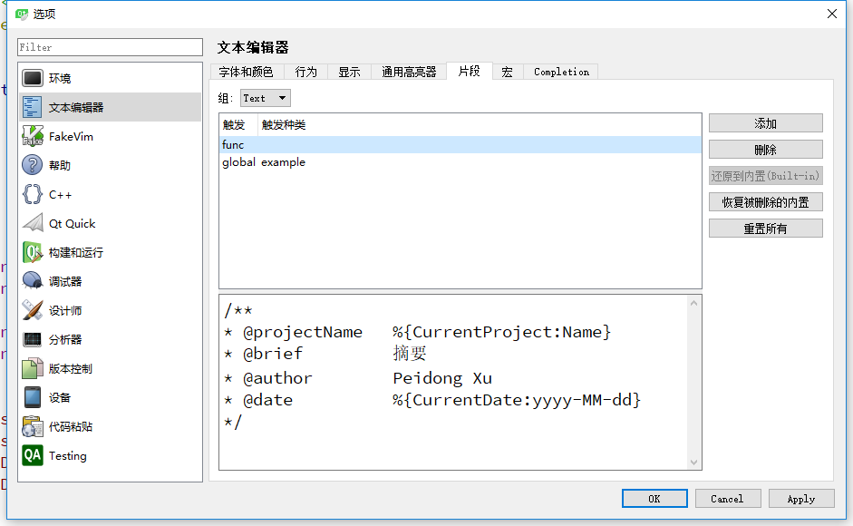
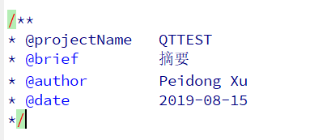

作为一个QT（C++/linux/windows）开发工程师，把自己在工作中遇到的一些QT问题持续总结给大家，一起分享：
一、隐藏鼠标：QApplication::setOverrideCursor(Qt::BlackCursor);
二、条件编译debug和release:
CONFIG +=debug_and_release
CONFIG(debug,debug|release)
{
//生成位置
DESTDIR+=$$PWD/debug
//库依赖
LIBS += -L$$PWD/ -lprotobuf
}else{
}
三、屏蔽release版本中所有QDebug()提示信息，可以在pro文件中添加DEFINES+=QT_NO_DEBUG_OUTPUT
四、窗体至于父窗体之上：QWidget->raise()；这块注意区分QDialog的模态和非模态
五、中文显示乱码：QStringLiteral("中文")；或者QString::toLocal8Bit()；
六、获取linux的hostname：QHostInfo::localHostName();
七、子控件不受父控件的影响：QLabel->setStyleSheet("#objectName{background-color:black}");这里注意用#objectName
八、QT信号槽不支持类型的情况下需要测试此类型：
qRegisterMetaType<std::string> （“std::string”);
qRegisterMetaType<std::string> （“std::string&”);
九、用一个pro工程加载和编译若干个工程，这样加载一个工程即可全部加载，无需一个个打开添加pro，编译一样：
新建一个Alllib工程，在Alllib.pro里面添加：
TEMPLATE = subdirs
SUBDIRS += ../tmp1
SUBDIRS += ../tmp2
。。。。。。。。。
十、error："QApplication:No Such file or direction"：
Qt5里不再用QtGui模块，而是使用QtWidgets模块
解决方法：在pro文件里面添加：greaterThan(QT_MAJOR_VERSION, 4): QT += widgets
十一、QT Creator添加自定义注释：
打开 Qt Creator，菜单选择：工具 -> 选项 -> 文本编辑器 -> 片段。点击“添加”按钮，编辑自定义的“触发”。
/**
* @projectName %{CurrentProject:Name}
* @brief 摘要
* @author Peidong Xu
* @date %{CurrentDate:yyyy-MM-dd}
*/

